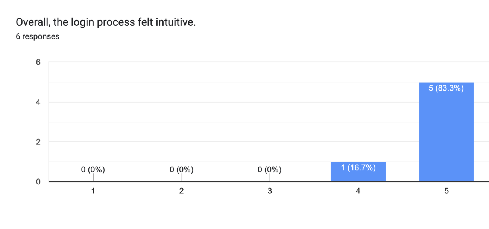

01
Alert to action
- Research
- There was no visual indicator of a successful login, and the homescreen had no clear hierarchy. An overloaded left nav and unbalanced layout left users unsure where to start.
- Insight
- In the moment a user actually opens this app, right after an alert, every extra second of confusion matters.
- Decision
- We moved navigation to the bottom of the screen for one-handed mobile use, simplified camera switching from the main nav, and restructured the homescreen into a dashboard.
- Outcome
- 50% (3/6) of usability participants said they wanted a clearer visual confirmation after logging in, which was logged as a priority for the next iteration.
